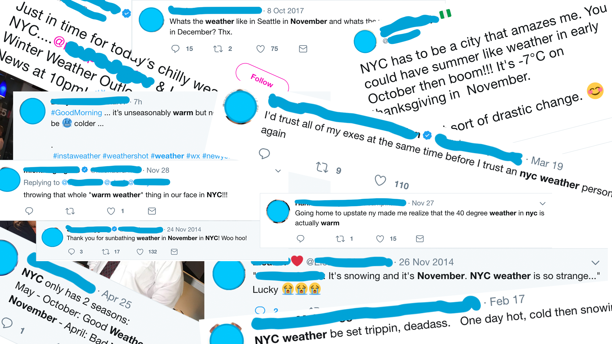

Social media is a powerful platform to share opinions, ideas, experiences and information. The data collected from these platforms can give us useful insights. Geologists and climatologists are constantly observing and plotting patterns for changes in the Earth’s atmosphere. For this article we collected weather related tweets from users located in New York. Using this data we made weather visualizations for the past year for the city of New York.
The motive was to highlight minor deviations between the perceived and actual weather from this data on the lowest level which might not be captured by the weather department. The weather in New York is unpredictable enough to give us enough supporting evidence of this deviation in actual and perceived weather. We will discuss this further in the article.
Data Collection
We handpicked tweets for the past year (Nov, 2017 - Oct, 2018) for the city of New York using advanced Twitter filters. We used hashtags like #NYC, #weather, #<''month name''> and a few others. We also collected a detailed dataset for the month of October. The dataset had information like user name, date, tweet and the hashtags used. We got the original weather forecast dataset from National Center for Environmental Information.
Data Mapping
We analysed the tweets to derive a scale of temperature that was felt by the users during the year. We got values ranging from "Very Hot"(tempartures between 85-95 F) to "Very Cold"(35-44 F). Each tweet was qualitatively analysed before being associated with a value from the scale.
Data Visualization
After curating the dataset we then created the visualizations for yearly tweets as well as a focused monthly visualization for October. For our final visualization we used a radial chart to represent the yearly weather pattern derived from the dataset. We used the global color scale of temperature for easy understanding. The radial chart also helps in showing cyclic weather patterns throughout the year. After making the individual visualizations for the actual and observed weather patterns, we made a simple line graph for the comparison of the two to get an overview of the discrepancies in the weather predictions by the meteorology department.
Scroll down to view our findings.
This was weather feeling of twitter users for the year starting Nov, 2017 to Oct, 2018 in NYC. There are some interesting variations in temperature over the year where the weather was unexpectedly hot in the winter months and often times pleasant in the hot months.
This was weather feeling of twitter users for the month of October 2018 in NYC. There were small spurts of hikes or drops in temperature but it was a relatively pleasant month with temperatures matching the fall season vibes.
Each tweet was qualitatively analysed and manually coded for each value on our scale("Very Hot to Very Cold"). Every individual code has an underlying temperature range which we determined from the recorded low and high temperature of NYC. Find this coding here.
We picked the official weather forecast dataset from NOAA and made a visualization of the predicted weather for the same year. As expected, there is a notable difference between the two visualizations (Percieved and Actual). In general, the spread of the cold weather is larger in the perceived visualization as compared to the actual one.
The visualization for the average temperatures(average of the min and max temp) of actual and perceived weather shows a significant mismatch. However since the comparison is made on average estimates of twitter users' perception, some of the closely coupled deviations could be ignored. Apart from these, there are several deviations which are drastic enough to not be ignored.